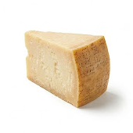

Pasta
8:24
2
Prepare the cheeses
While the pasta boils, finely grate the three cheeses. Crush the pink peppercorns lightly with the back of a knife or in a mortar and pestle.
For this step

Parmesan · 80g Gruyère · 60g Pink peppercorns